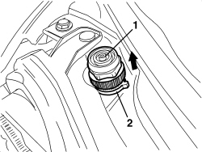
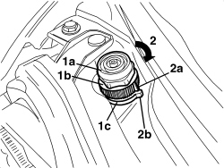

7025A15 BONNET LID SELF-ADJUSTING BUFFERS - R.R.
- Path
- Procedures > 70 FITTINGS > 7025 COMPARTMENT COVERS > 7025A BONNET LID > 7025A15 BONNET LID SELF-ADJUSTING BUFFERS - R.R.
- Kind
- repair procedure (removal / refitting; the operation number is the code)
- Applies to
- all engines; all production periods
- Interactive page
- https://sloeber94.github.io/elrnDB-aBrrSpdr/en/#/946002561
Applies to: all engines; all production periods
 Removing
Removing
 Refitting
Refitting- Open the bonnet.
1. Undo the end of travel buffers ring nut.
2. Remove the buffers from the housings in the bodyshell using a screwdriver for leverage and raising the support plane.

Applies to: all engines; all production periods
Applies to: all engines; all production periods
Refitting
Removing- Check that the new buffers are not damaged.
1. Fit the new buffers (1a) in place, without rotating the ring nut (1b) in relation to the base (1c).
Place the mounting base (1c) in contact with the panel.
- Close the bonnet twice, checking that it closes correctly and completely.
- Open the bonnet again.
2. Rotate the ring nut (1c) clockwise through around 340° until it is aligned with the references (2a and 2b) on the ring nut and on the base.
- Close the bonnet again and check that it shuts properly and the profile is correct.
